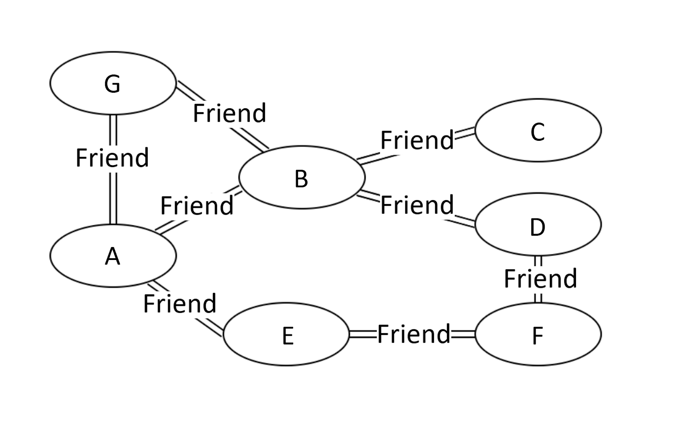
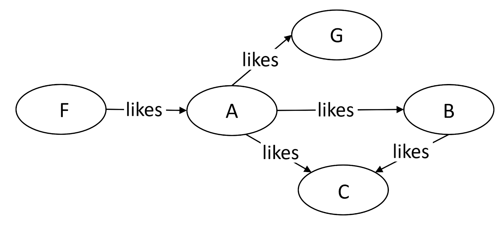
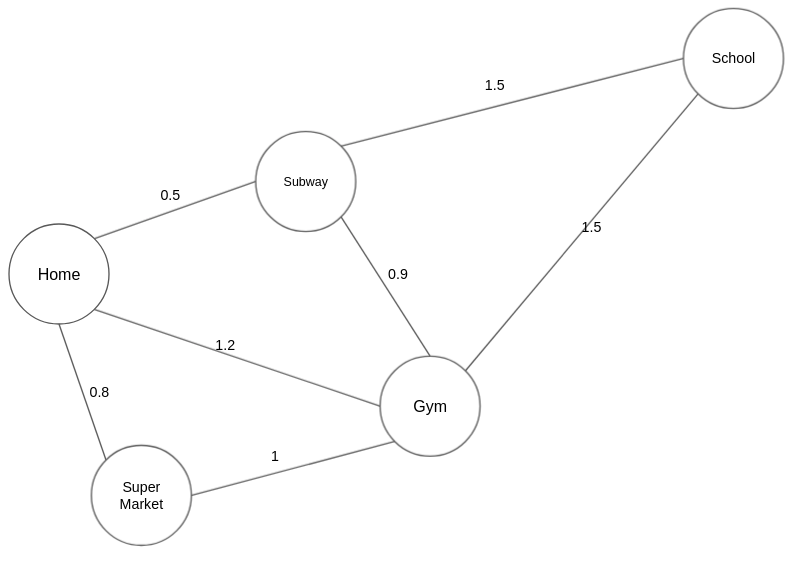
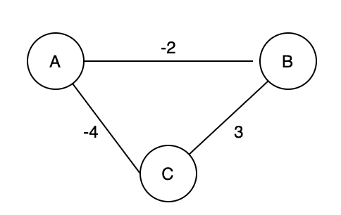

Граф, вероятно, представляет собой структуру данных, которая больше всего похожа на нашу повседневную жизнь. Существует множество типов графов, описывающих отношения в реальной жизни. Например, круг наших друзей представляет собой огромный «граф».

На рисунке 1 выше мы видим, что люди G, B и E являются прямыми друзьями A, тогда как люди C, D и F являются косвенными друзьями A. Этот пример представляет собой социальный график дружбы. Итак, что же такое структура данных «граф»?
Существует много типов «графиков». В этой карточке исследования мы представим три типа графиков: неориентированные графы, ориентированные графы и взвешенные графы.
Ребра между любыми двумя вершинами в «неориентированном графе» не имеют направления, что указывает на
двустороннюю связь.
На рисунке 1 приведен пример неориентированного графа.
Ребра между любыми двумя вершинами в графе «ориентированный граф» являются направленными.
На рисунке 2 приведен пример ориентированного графа.

Каждое ребро во «взвешенном графе» имеет связанный с ним вес. Вес может иметь любую метрику, например время, расстояние, размер и т. д. Наиболее часто встречающейся «взвешенной картой» в нашей повседневной жизни может быть карта города. На рисунке 3 каждое ребро отмечено расстоянием, которое можно рассматривать как вес этого ребра.

«График» — это нелинейная структура данных, состоящая из вершин и ребер. Для описания графа существует множество терминов. Если вы встретите незнакомый термин в следующей карточке исследования, вы можете посмотреть его определение ниже.
**Примечание**: между двумя вершинами может быть несколько путей.
